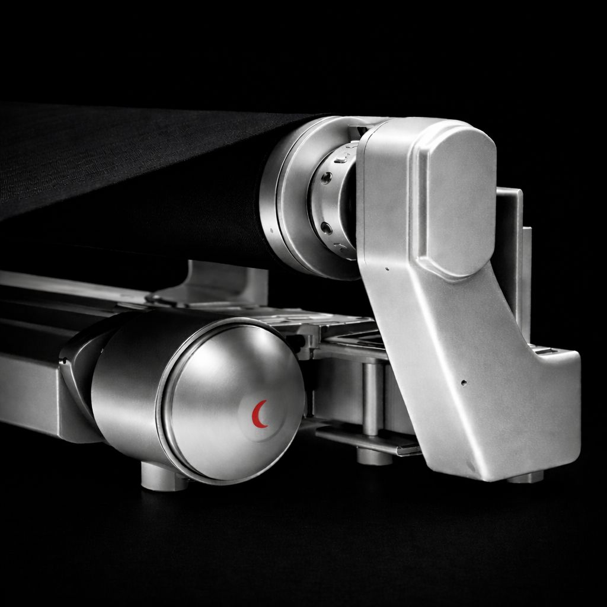
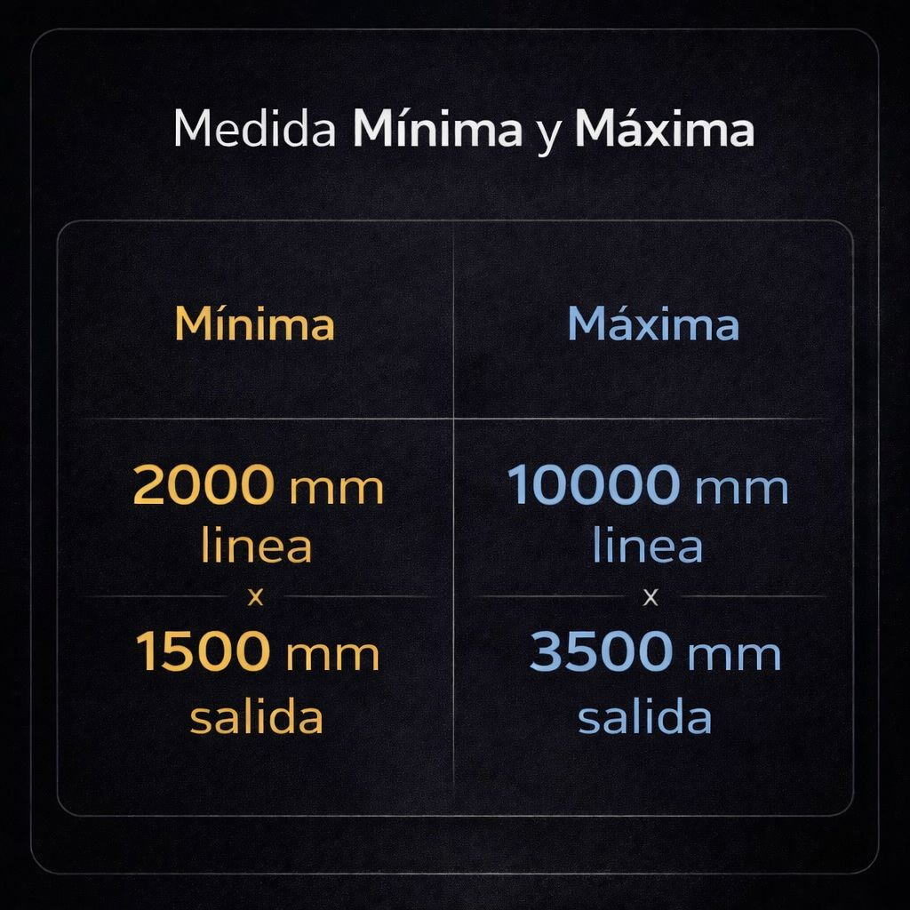
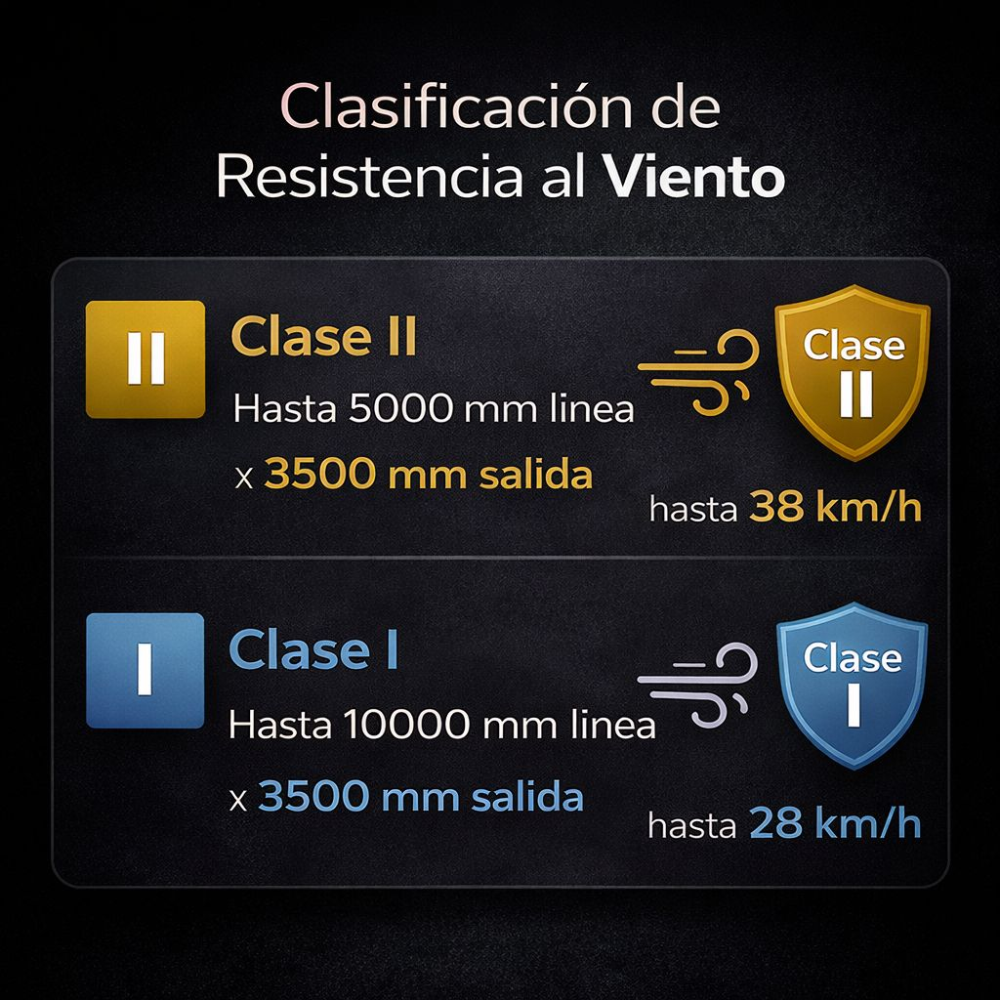
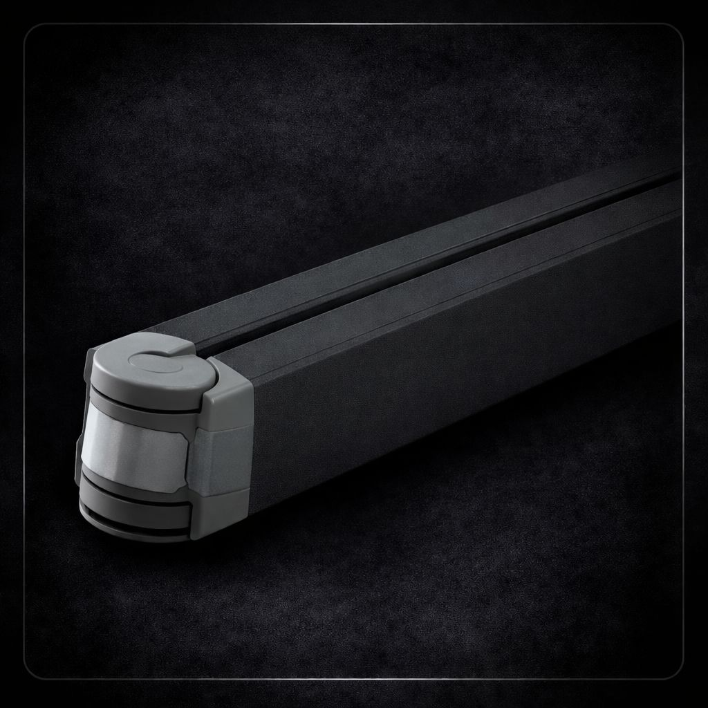
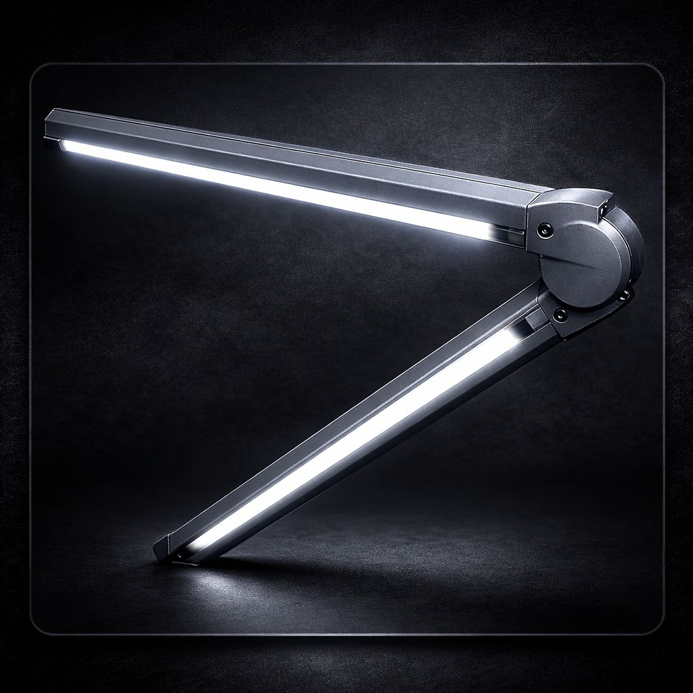
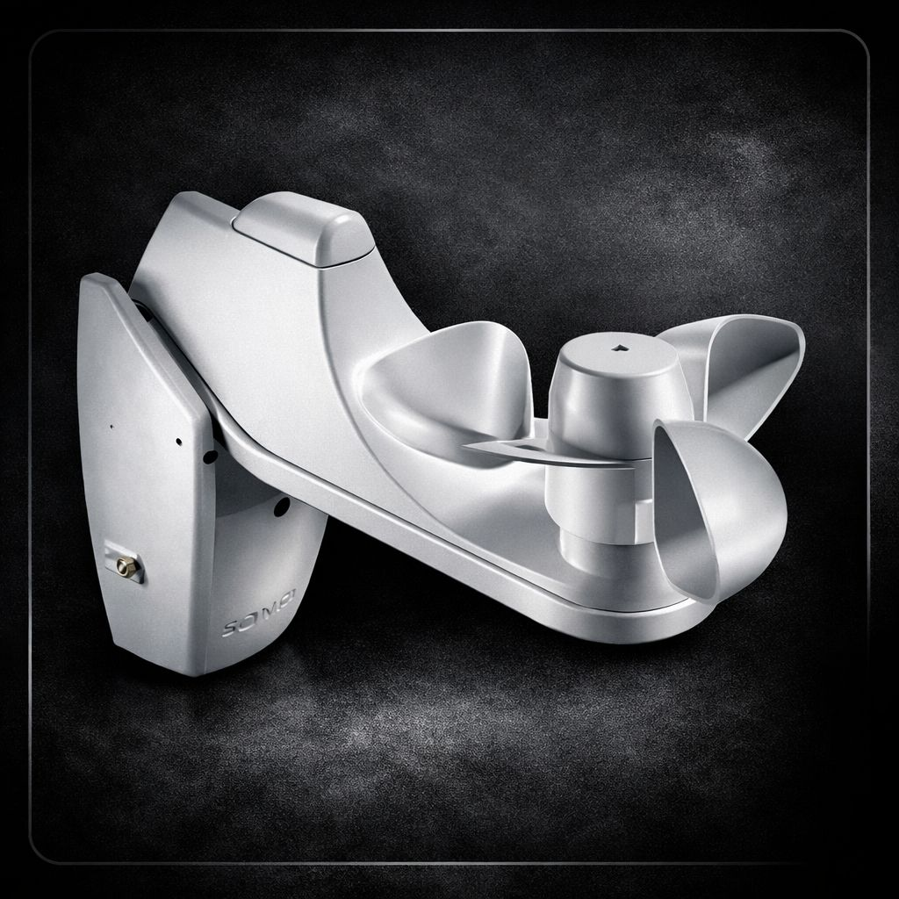

Diseño elegante, gran rendimiento estructural y opciones premium para terrazas, balcones y exteriores.
Configurar ToldoEl toldo brazos articulados M1 Concept está pensado para quienes buscan una solución exterior con una estética cuidada, un funcionamiento cómodo y un comportamiento estructural fiable incluso en instalaciones de grandes dimensiones.
Su diseño moderno y su estructura de aluminio lo convierten en una opción ideal para terrazas, balcones, patios y fachadas donde se busca protección solar, amplitud de sombra y una imagen limpia y elegante.
Un toldo brazos articulados de gran medida es una solución ideal para proteger del sol terrazas amplias, balcones y espacios exteriores donde se necesita una mayor cobertura sin renunciar a una estética elegante.
En ERB Deco trabajamos toldos pensados para combinar diseño, funcionalidad y durabilidad, adaptando cada instalación a las medidas, orientación y necesidades reales de cada proyecto.
Una solución exterior elegante, robusta y preparada para grandes dimensiones.
Diseñado para ofrecer resistencia, estabilidad y confort en exterior.

Soportes robustos para una fijación fiable y un alto rendimiento estructural.

Configuración adaptable según el ancho y la salida necesarios.

Clase II - Hasta 38 km/h.


Accionamiento manual

Accionamiento motorizado

Iluminación LED para mejorar el ambiente y el confort del espacio exterior.

Detector de viento y sol para automatizar la protección del toldo.

Control remoto para un manejo más cómodo y práctico.
El M1 Concept es una opción muy equilibrada para quienes buscan un toldo brazos articulados de gran medida, elegante, fiable y con opciones de motorización y automatización.
Si quieres configurar tu toldo y recibir una propuesta adaptada a tu espacio, puedes solicitar presupuesto directamente desde nuestra web.
En ERB Deco realizamos proyectos de toldos brazos articulados de gran medida para terrazas, balcones y espacios exteriores, adaptándonos a las características de cada vivienda y a las necesidades de sombra, estética y confort.
Trabajamos especialmente en zonas de toldos brazos articulados en Barcelona y provincia y toldos brazos articulados en Girona y provincia, donde desarrollamos soluciones exteriores elegantes, funcionales y adaptadas a cada espacio.
Es un toldo de brazos articulados de gran medida, con estructura de aluminio, diseño elegante y alto rendimiento estructural, pensado para terrazas, balcones y espacios exteriores.
Sí. El toldo M1 Concept puede incorporar accionamiento motorizado para una apertura y recogida más cómoda.
Sí. Puede incorporar iluminación LED para mejorar el confort y el ambiente del espacio exterior.
Sí. Se pueden añadir sensores de viento y sol para automatizar la protección del toldo.